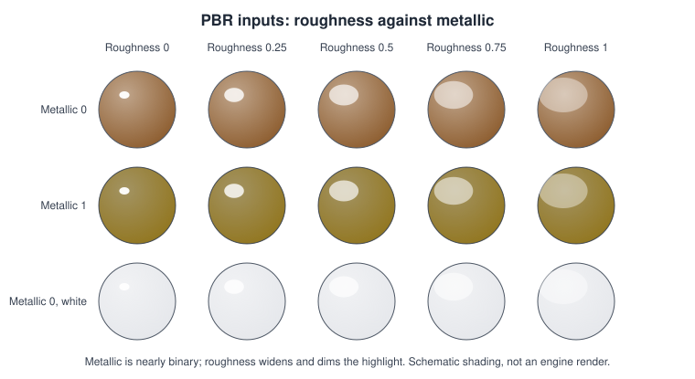
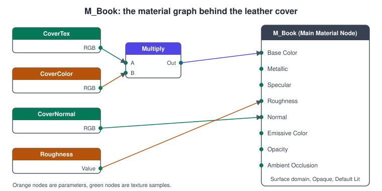
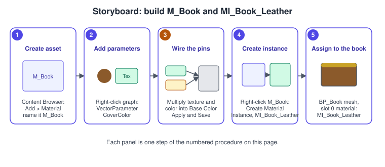
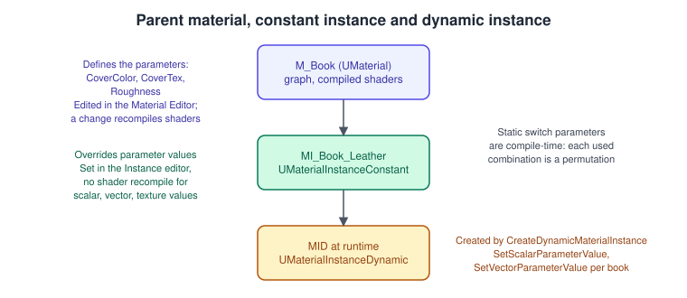
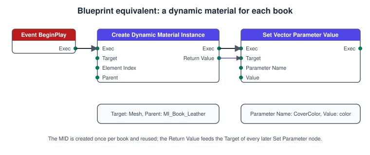

Materials and the Material Editor
|
This content was generated with the assistance of AI and should be verified against the official documentation before being relied on in production. |
A material tells the renderer what a surface looks like: its colour, how shiny it is, whether it glows, whether light passes through it, and how its vertices move. In Unreal Engine you do not write a shader by hand for most surfaces; you build a material graph of expressions in the Material Editor, wire the result into the pins of the Main Material Node, and the engine compiles the graph into shader code for every platform and renderer path (see Rendering Overview). Artists then make cheap variations with material instances that change parameters without recompiling.
The facts on this page were checked in November 2026 against the Unreal Engine 5.8 documentation (released 17 June 2026, latest hotfix found 5.8.4). The Material Editor runs in the Unreal Editor on Windows (Visual Studio 2026 18.0 or newer recommended for the C++ in
this page), macOS and Linux, and the materials it builds run on every renderer path. The Bookshelf uses three assets: the parent material M_Book (cover texture, CoverColor tint, roughness and a normal map), the constant instance MI_Book_Leather, and a
dynamic instance per book created at runtime by ABookActor. The textures are the ones shipped with the bookshelf.glb model (wood, cover, spine and pages). Engine-neutral material theory is in
Lighting and Shading Models and Textures, Sampling and Mipmaps; Unity’s equivalent is
Materials, Textures and Lighting.
What a material is
A material is an asset (UMaterial) whose graph is evaluated per pixel (and, for a few inputs, per vertex). Epic calls it the "paint" applied to a mesh. Its inputs come from textures, expressions and the property
settings of the material. Three property groups decide how the result is used, and they are set in the Details panel of the Main Material Node:
-
Material Domain: what the material is for. Surface (the default) is a physical surface; the others are Deferred Decal, Light Function, Volume, Post Process, User Interface and Virtual Texture.
-
Blend Mode: how the result combines with what is already in the frame.
-
Shading Model: how the inputs are turned into lit colour.
Because every distinct combination of these, the used usage flags, the active features and any static switches is compiled separately, one material asset can produce several shaders; keeping the numbers small is a recurring performance theme later on this page.
Blend modes
| Blend mode | Behaviour |
|---|---|
Opaque |
Draws over the background and works with dynamic lighting. The default and the cheapest. |
Masked |
Each pixel is fully visible or fully discarded: it is dropped when the Opacity Mask is below the Opacity Mask Clip Value. Works with lighting; used for fences, leaves and wire mesh. |
Translucent |
Blends by Opacity. Does not use the deferred lighting path; lighting is chosen by the translucency Lighting Mode and it is the costliest because it overdraws. |
Additive |
Adds the source colour to the destination; fire and glows. No dynamic lighting. |
Modulate |
Multiplies source and destination; stains and tints. No dynamic lighting or fog, except for decals. |
AlphaComposite |
For textures with premultiplied alpha; it can improve additive blending. |
Shading models
The shading model defines which inputs exist and how they combine. Default Lit is the standard physically based model and the default. Unlit outputs only emissive colour. Subsurface, Preintegrated Skin and Subsurface Profile model light scattering inside skin and wax; Clear Coat adds a second specular layer (lacquer on a wooden table); Two Sided Foliage lights leaves from both sides; Hair, Cloth, Eye, Single Layer Water and Thin Translucent are specialised models, and From Material Expression lets a graph supply its own. The Bookshelf covers use Default Lit; the lacquer of the desk uses Clear Coat. Note that the available shading models differ between the desktop deferred path and mobile, and that Substrate (below) replaces this list with a modular system.
Two Sided and usage flags
Two Sided flips the normal on back faces so both sides are lit, which foliage and paper need; it does not render correctly with static lighting. Usage flags (Used with Skeletal Mesh, Used with Niagara Sprites, Used with Instanced Static Meshes, Used with Landscape, Used with UI and others) tell the engine which shader variants to compile; they apply only to the Surface domain. Automatically Set Usage in Editor is on by default, but if a flag is missing in a packaged build the game falls back to the default world grid material and logs a message, so test every material on the mesh type it is used with.
PBR inputs

Unreal’s materials are physically based: their inputs describe measurable properties of a surface, so one material looks correct under any lighting. The inputs of the Main Material Node for a Default Lit surface:
| Input | What to put in it |
|---|---|
Base Color |
RGB, each channel 0 to 1: the colour of the surface without lighting. For a non-metal, the diffuse colour (charcoal about 0.02, fresh snow about 0.81 in Epic’s measured values); for a metal, its measured reflectance (gold about 1.0, 0.77, 0.34). Never paint shadows or highlights into it. |
Metallic |
0 for non-metals, 1 for metals. Treat it as binary: use a black and white mask for painted metal, not grey, and use intermediate values only for transitions such as rust. |
Specular |
0 to 1, default 0.5, which is about 4 percent reflectance. Leave it alone for most materials; do not set it to 0 for a diffuse surface (use high roughness) and do not use it as a reflection map, that is roughness’s job. |
Roughness |
0 (mirror) to 1 (matte). The most expressive input: variation in a roughness map (smudges, scuffs, worn spines) is what makes a surface believable. |
Anisotropy and Tangent |
Stretch the highlight along a direction, as in brushed metal. |
Emissive Color |
Light the surface emits. Values above 1 are allowed for HDR glow, which feeds bloom and, with Lumen, light on nearby surfaces. |
Opacity, Opacity Mask |
Opacity (0 to 1) for Translucent, Additive and Modulate; Opacity Mask for the Masked blend mode. |
Normal |
A tangent-space normal map: changes how light hits each pixel to fake fine detail without geometry. Small-scale detail baked into a normal map is not captured by real-time shadows. |
World Position Offset |
Moves vertices in world space: wind in foliage, flags, ambient animation. Costs a vertex-shader evaluation, and it is the main reason a material may need extra care on Nanite meshes. |
Subsurface Color |
Tint of light scattering through the surface; requires the Subsurface shading model. |
Ambient Occlusion |
Baked crevice shadowing, usually a texture. It is ignored when movable lights are used. |
Refraction |
Index of refraction for glass and water. |
Pixel Depth Offset |
Adjusts pixel depth, for blending an object into the surface it intersects. |
A cavity map (an ambient occlusion map with a very short trace distance) is multiplied into Base Color and, with the 0.5 default, into Specular, to simulate micro-occlusion. Texture settings matter as much as the graph: colour textures are sRGB, but masks, normal maps and packed roughness/metallic/AO textures must have sRGB off and the right Compression Settings (Normalmap for normals, Masks for packed data); otherwise values are gamma-converted and the material looks wrong. The theory behind these inputs is in Lighting and Shading Models.
The expression graph

The graph is a data-flow network. Each expression is a node with inputs on the left and outputs on the right; wires carry values; the Main Material Node at the end has one pin per input listed above. Expressions fall into families: texture sampling (TextureSample, TextureSampleParameter2D), constants and parameters (Constant, Constant3Vector, ScalarParameter, VectorParameter), maths (Add, Multiply, Lerp, Power, Clamp, OneMinus, Saturate), texture coordinates (TextureCoordinate, Panner, Rotator), world information (WorldPosition, VertexColor, Time) and utilities (Fresnel, Reroute, Comment). The Material Expressions Reference lists them all; the palette on the right of the editor searches by name.
Values flowing along wires have one of four float data types: scalar (one component), two-component (UVs), three-component (colours, directions) and four-component (colour plus alpha), and a node can mask or append channels to convert between them. A texture’s colour is RGB plus alpha; the Mask expression (or the R, G, B, A outputs) selects channels, which is how one packed texture supplies roughness, metallic and AO.
Three habits keep graphs maintainable. Group nodes into Comment boxes by purpose (colour, normal, roughness). Use Reroute nodes for long wires. Turn every value an artist might change into a parameter with a Group and a Sort Priority, so the instance editor shows them in an orderly way.
Procedure: build M_Book and MI_Book_Leather

-
In the Content Browser, open
/Game/Bookshelf/Materials, choose Add > Material and name itM_Book. Double-click it to open the Material Editor. -
In the graph, right-click and add a TextureSampleParameter2D; name it
CoverTexand assign the imported cover texture. Add a VectorParameter namedCoverColor(default a warm brown). Add a ScalarParameter namedRoughness(default 0.55, slider range 0 to 1). -
Add a Multiply; connect
CoverTexRGB to input A andCoverColorto input B, and its output to Base Color. ConnectRoughnessto Roughness. Add a second TextureSampleParameter2D namedCoverNormal(Compression Normalmap) to Normal. -
Check the Details panel of the Main Material Node: Material Domain Surface, Blend Mode Opaque, Shading Model Default Lit. Press Apply and then Save; the first compile of a material can take a few seconds.
-
In the Content Browser right-click
M_Bookand choose Create Material Instance; name itMI_Book_Leather. Open it, tick the parameters you want to override (the defaultCoverColorandRoughnessare inherited) and save. -
Open
BP_Book, select the Mesh component and set Element 0 of Materials toMI_Book_Leather.
The Material Editor
The Material Editor has a graph in the middle, a palette of expressions, a details panel for the selected node (and, with nothing selected, for the Main Material Node), a preview viewport and a Stats panel. The workflow Epic describes is: create the asset, open it, place expressions and functions, connect them to the Main Material Node, compile and save, then apply the material to meshes in the level.
-
Apply and Save: without live updates, a change is only visible in the preview after Apply or Save.
-
Live Update has three options: Preview Material updates the preview viewport as you edit, Realtime Nodes animates time-based nodes such as Panners in their thumbnails, and All Node Previews recompiles every node preview on each change, which can be slow on large graphs (turn it off and press Space to refresh by hand).
-
Compiler errors: a node with a missing or mismatched required input shows ERROR! at its bottom and the Stats panel (Window > Stats) lists the details.
-
Search: Window > Find Results searches node text, parameter names, comments and specific node types; the
NAME=switch filters by type. -
Shader complexity: the viewport’s Optimization View Modes > Shader Complexity paints each pixel by the instruction cost of its material, and the Material Analyzer tool compares materials and instances across a project.
Parameters and material instances

A material instance is a child of a material (or of another instance). It inherits the whole graph and can change only the values that the parent exposes as parameters; because it does not change the graph, it does not recompile the shader, which for a complex material can take up to a minute. Epic’s naming
convention is the M_ prefix for parents and MI_ for instances.
| Parameter kind | Notes |
|---|---|
Scalar |
One float: roughness, metallic, an emissive multiplier. |
Vector |
Four floats: colours (the alpha channel is the fourth float) or any four-value data. |
Texture |
|
Static switch (and static component mask) |
Resolved at compile time: you can set them in the editor but not at runtime. They remove unused branches from the shader, but each combination that is actually used compiles its own shader, so keep their number small. |
Material Instance Constant (UMaterialInstanceConstant) is calculated before runtime and cannot change during gameplay; use it for fixed variations such as MI_Book_Leather. Material Instance Dynamic (UMaterialInstanceDynamic, MID) is created and changed at runtime: the Blueprint node is Create Dynamic Material Instance and the C++ function is UPrimitiveComponent::CreateDynamicMaterialInstance (or UStaticMeshComponent::CreateAndSetMaterialInstanceDynamic). A MID costs one object and one set of uniform values per instance, so it is right for a few hundred objects, not for tens of thousands.
For data shared by many materials (a global wetness, a day-night tint), a Material Parameter Collection holds scalar and vector parameters once; every material that reads it updates when you change the collection.
// Source/Bookshelf/Public/BookActor.h (excerpt: the material-related members of ABookActor)
#pragma once
#include "CoreMinimal.h"
#include "GameFramework/Actor.h"
#include "BookActor.generated.h"
class UStaticMeshComponent;
class URotatingMovementComponent;
class UMaterialInstanceDynamic;
class UMaterialInterface;
UCLASS()
class BOOKSHELF_API ABookActor : public AActor
{
GENERATED_BODY()
public:
ABookActor();
UPROPERTY(VisibleAnywhere, BlueprintReadOnly, Category = "Book")
TObjectPtr<UStaticMeshComponent> Mesh;
UPROPERTY(VisibleAnywhere, BlueprintReadOnly, Category = "Book")
TObjectPtr<URotatingMovementComponent> RotatingMovement;
UPROPERTY(EditAnywhere, BlueprintReadOnly, Category = "Book")
FText BookTitle;
/** Tint multiplied into the cover texture; drives the CoverColor parameter of M_Book. */
UPROPERTY(EditAnywhere, BlueprintReadOnly, Category = "Book|Material")
FLinearColor CoverColor = FLinearColor(0.35f, 0.18f, 0.08f, 1.0f);
/** The material to instance; normally MI_Book_Leather, set on the Blueprint subclass. */
UPROPERTY(EditAnywhere, BlueprintReadOnly, Category = "Book|Material")
TObjectPtr<UMaterialInterface> BaseMaterial;
UFUNCTION(BlueprintCallable, Category = "Book|Material")
void SetCoverColor(const FLinearColor& NewColor);
/** 0 = normal, 1 = glowing; used when the book is held or highlighted. */
UFUNCTION(BlueprintCallable, Category = "Book|Material")
void SetHighlight(float Amount);
protected:
virtual void OnConstruction(const FTransform& Transform) override;
private:
void EnsureMaterial();
UPROPERTY(Transient)
TObjectPtr<UMaterialInstanceDynamic> CoverMaterial;
};// Source/Bookshelf/Private/BookActor.cpp (excerpt: material handling)
#include "BookActor.h"
#include "Components/StaticMeshComponent.h"
#include "GameFramework/RotatingMovementComponent.h"
#include "Materials/MaterialInstanceDynamic.h"
#include "Materials/MaterialInterface.h"
namespace
{
const FName CoverColorParam(TEXT("CoverColor"));
const FName HighlightParam(TEXT("Highlight"));
}
ABookActor::ABookActor()
{
PrimaryActorTick.bCanEverTick = false;
Mesh = CreateDefaultSubobject<UStaticMeshComponent>(TEXT("Mesh"));
SetRootComponent(Mesh);
RotatingMovement = CreateDefaultSubobject<URotatingMovementComponent>(TEXT("RotatingMovement"));
RotatingMovement->RotationRate = FRotator(0.0f, 45.0f, 0.0f);
}
void ABookActor::OnConstruction(const FTransform& Transform)
{
Super::OnConstruction(Transform);
EnsureMaterial();
}
void ABookActor::EnsureMaterial()
{
if (CoverMaterial == nullptr)
{
// Parent: the explicit BaseMaterial if set, otherwise whatever slot 0 already uses.
UMaterialInterface* Parent = BaseMaterial ? BaseMaterial.Get() : Mesh->GetMaterial(0);
CoverMaterial = Mesh->CreateDynamicMaterialInstance(0, Parent);
}
if (CoverMaterial)
{
CoverMaterial->SetVectorParameterValue(CoverColorParam, CoverColor);
}
}
void ABookActor::SetCoverColor(const FLinearColor& NewColor)
{
CoverColor = NewColor;
EnsureMaterial();
}
void ABookActor::SetHighlight(float Amount)
{
EnsureMaterial();
if (CoverMaterial)
{
CoverMaterial->SetScalarParameterValue(HighlightParam, FMath::Clamp(Amount, 0.0f, 1.0f));
}
}
The data side of the Bookshelf, where a Data Table row decides CoverColor for each book, is in Data-Driven Gameplay. When many books should share one value, a parameter collection is the better tool:
// Source/Bookshelf/Public/BookshelfMaterialLibrary.h
#pragma once
#include "CoreMinimal.h"
#include "Kismet/BlueprintFunctionLibrary.h"
#include "BookshelfMaterialLibrary.generated.h"
class UMaterialParameterCollection;
UCLASS()
class BOOKSHELF_API UBookshelfMaterialLibrary : public UBlueprintFunctionLibrary
{
GENERATED_BODY()
public:
/** Sets the ShelfGlow scalar of MPC_Bookshelf, read by every material that uses the collection. */
UFUNCTION(BlueprintCallable, Category = "Bookshelf|Material", meta = (WorldContext = "WorldContextObject"))
static void SetShelfGlow(const UObject* WorldContextObject, UMaterialParameterCollection* Collection, float Amount);
};// Source/Bookshelf/Private/BookshelfMaterialLibrary.cpp
#include "BookshelfMaterialLibrary.h"
#include "Kismet/KismetMaterialLibrary.h"
#include "Materials/MaterialParameterCollection.h"
void UBookshelfMaterialLibrary::SetShelfGlow(const UObject* WorldContextObject, UMaterialParameterCollection* Collection, float Amount)
{
if (Collection != nullptr)
{
UKismetMaterialLibrary::SetScalarParameterValue(WorldContextObject, Collection, TEXT("ShelfGlow"), Amount);
}
}Material functions and layered materials
A Material Function packages part of a graph as an asset, so the same logic can be inserted in many materials; editing the function updates every material that uses it. Functions have inputs and outputs, can be marked to be shared in the function library, and the engine ships categories of them (Blend, Gradient, Image Adjustment, Math, Misc, Opacity, Particles, Procedurals, Reflections, Shading, Texturing, Vector Ops, World Position Offset). Use them for anything you draw twice: a leather wear mask, a UV tiling helper.
Layered materials build a complex surface from several simpler ones. Epic describes two ways. Layered Materials (with Material Functions) define each layer as a Material Function in Material Attributes form, and a base material holds the logic that blends the layers. Material Layers give the instance editor a Layer Parameters tab where an artist swaps layers, reorders the stack and adjusts the blend without editing the graph; the page presents this as the faster, more iterative option for artists. Texture masks in a normal material achieve similar results. The layered approach makes later edits easier; the cost is the same shader work for every layer you evaluate.
Substrate
Substrate is the material framework of Unreal Engine 5. It replaces the fixed list of shading models and blend modes (Default Lit, Clear Coat and so on) with a modular description of a surface built from BSDF building blocks that you combine and layer, so that, for example, a lacquered wood with a dusty film is one material rather than a compromise between two shading models. The 5.8 documentation’s Substrate page covers the principled BSDF authoring overview, a programmer’s guide to the Substrate GBuffer formats, and a developer’s course whose topics include F0, F90 and specular colour, simple dielectrics, conductors, thin-film interference, mean free path, BSDF layering, fuzz and a copper example. At the time of checking the index page carried a Beta label and advised caution when shipping with it. The Substrate overview states that from 5.7 new projects have Substrate enabled by default while projects upgraded from earlier versions keep the non-Substrate path unless they opt in; the switch is project-wide, and the exact setting and the conversion of existing materials are described on the Substrate pages.
Substrate Toon Shading (experimental in 5.8) is a non-photorealistic mode built on Substrate’s blendable GBuffer mode. It adds a Toon BSDF and a Toon Profile asset, with ramp-based diffuse and specular (with dithering), self-shadowing extinction with hatching, anisotropic specular and GI scale controls; it supports local lights, sky lights and Lumen GI. The 5.8 release notes also list import of measured X-Rite AxF materials into Substrate.
Substrate changes the GBuffer, so shaders that read the GBuffer directly (custom post-process materials, some plugins) must use the Substrate accessors. For the Bookshelf, which does not need layered lacquer, the classic shading models stay the simpler choice; the Rendering Overview explains what the GBuffer is.
Common mistakes
-
Changing a parent material for a cosmetic variation. Every edit recompiles the shader and affects all instances; make it a parameter and use an instance.
-
Baking lighting into Base Color. Painted highlights and shadows fight the renderer; keep the Base Color unlit and put variation in roughness and normal.
-
Treating Metallic as a slider. Grey values give a surface that is neither metal nor dielectric; use 0 or 1 with masks.
-
sRGB on for data textures. Normal maps, masks and packed ORM textures must have sRGB off and the right compression, or the values are gamma-converted.
-
Many static switches. Each used combination compiles a shader; a dozen switches can produce thousands of permutations.
-
Creating a MID every frame. Create it once (the code above caches it in
CoverMaterial) and set parameters on it; a new MID per tick allocates objects and breaks batching. -
Forgetting usage flags. A material used on a skeletal mesh, Niagara sprites or instanced meshes needs the flag; in a packaged game a missing flag shows the default grid material.
-
Translucent for everything. Translucent surfaces overdraw and do not receive deferred lighting; use Masked or Opaque where possible.
-
Using
GetMaterialand editing it. Editing the shared asset changes every user; create a MID.
Performance notes
-
Material cost is mostly instruction count and texture samples. Check Stats in the editor and the Shader Complexity view mode; red or white pixels cost the most.
-
Hardware limits the number of unique texture samplers a material can use; share samplers, and pack three single-channel masks into one texture.
-
A material’s cost scales with the pixels it covers: opaque overdraw, translucent layers and large masked surfaces such as foliage are where it hurts. Nanite reduces geometry cost but not material cost.
-
World Position Offset and Pixel Depth Offset disable some optimisations; use them where needed.
-
Static switches remove work from the shader at the price of permutations; dynamic branches in the graph run per pixel. Prefer a switch for choices made at design time.
-
Instances are cheap: a thousand
MI_assets cost nothing at compile time; a thousand MIDs cost memory and one uniform buffer each. -
The mobile renderer limits samplers and instruction counts more strictly; see Android and Mobile, and for general tools Profiling and Optimization.
What changed recently
| Version | Change |
|---|---|
UE 5.8 (June 2026) |
Substrate Toon Shading (experimental) with a Toon BSDF and Toon Profile; X-Rite AxF import into Substrate; Substrate Blendable GBuffer mode as the base for the toon path. The Substrate documentation page is marked Beta. |
UE 5.7 (November 2025) |
Substrate is enabled by default in new projects; upgraded projects stay on the non-Substrate path unless they opt in. Nanite Foliage is introduced. |
UE 5.0 and later |
Lumen replaces most baked-lighting assumptions: ambient occlusion maps are ignored with movable lights, and Lumen handles reflections, so materials need roughness and normal more than baked lighting tricks. |
Where the books are outdated
Two books treat materials: Unreal Engine: Game Development from A to Z (Joanna Lee, John P. Doran and Nitish Misra; ATZ, a learning path that combines three books for UE 4.7 to 4.10) in module 1 chapter 4 and module 2 chapter 7, and Unreal Engine 4.X By Example (Benjamin Carnall; CAR, UE 4.10 and 4.11) in chapter 8. The principles of physically based inputs still apply; the surrounding workflow has changed.
| Book and chapter | What the book shows | What is current in 5.8 |
|---|---|---|
ATZ M1-4, M2-7 |
Materials for the UE 4.7 to 4.10 editor, built around the older material workflow and the static-lighting pipeline. |
The Main Material Node, parameters and instances work as described above. Lumen lights materials dynamically; Substrate is an optional modular framework. |
CAR ch. 8 |
Materials in the UE 4.10 editor, with the interface and node names of that release. |
The graph concepts are unchanged; the editor UI has been reorganised, and the Material Analyzer, Substrate and layered materials are new. |
ATZ, CAR |
Lightmass baking and per-material baked ambient occlusion as the default. |
Ambient Occlusion inputs are ignored with movable lights; Lumen is the default dynamic global illumination (see Lighting, Lumen and MegaLights). |
See also
-
Lighting and Shading Models: the Blinn-Phong to PBR theory behind the inputs.
-
Textures, Sampling and Mipmaps: sRGB, mip levels and compression.
-
Color Spaces, HDR and Tone Mapping: why emissive values can exceed 1.
-
Unity Materials, Textures and Lighting and Shader Graph and HLSL: Unity’s counterparts to the Material Editor.
-
Metal PBR materials: the same inputs in a hand-written renderer.
-
Rendering Overview: the GBuffer and the renderer paths that consume materials.
-
Lighting, Lumen and MegaLights: how materials receive light.
-
Nanite and Virtual Geometry and Niagara VFX: materials on meshes and particles.
-
Data-Driven Gameplay: Data Table rows that choose cover colours.
-
Actors and Components:
ABookActorand its mesh component.